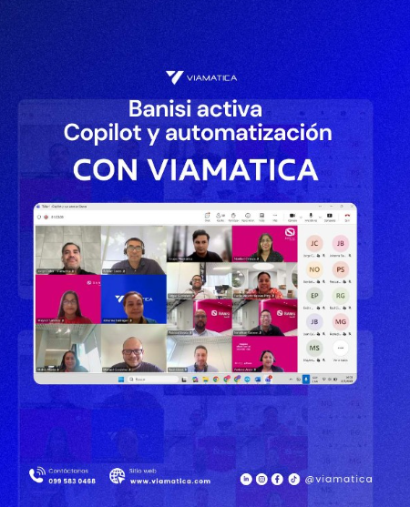
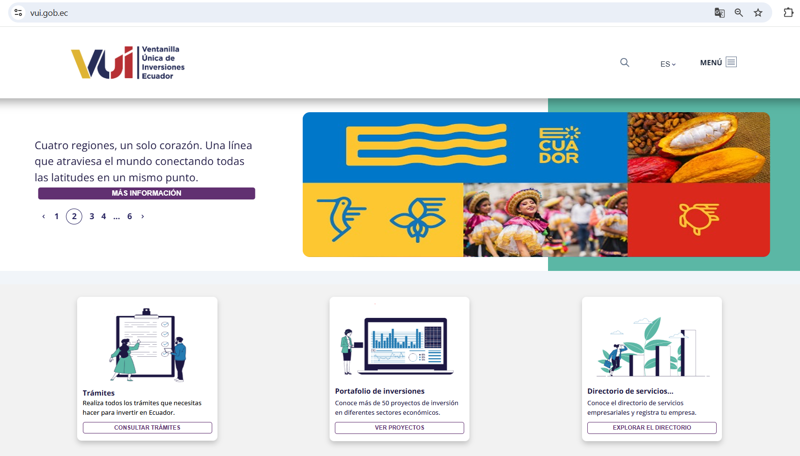
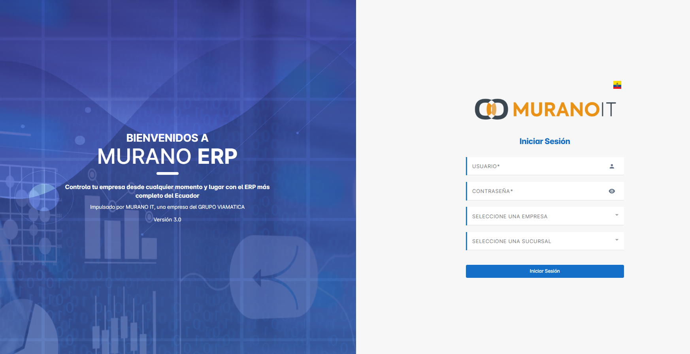

Inteligencia artificial aplicada
Modelos de lenguaje, arquitecturas RAG, bases vectoriales y agentes conversacionales en producción.
- LangChain
- Azure OpenAI
- pgvector
- MCP
Johanna Barragán
Consultora en IA & Automatización
PORTAFOLIO
Consultora tecnológica con más de 20 años de experiencia en transformación digital. En Viamatica implemento soluciones de inteligencia artificial y automatización que optimizan los procesos de empresas de banca, seguros y retail desde Guayaquil, Ecuador.
Soy consultora tecnológica con más de 20 años de experiencia en transformación digital. Empecé desarrollando sistemas administrativos y hoy diseño arquitecturas de datos e inteligencia artificial para clientes de banca, seguros y retail.
En Viamatica acompaño a equipos técnicos y comerciales para llevar soluciones de IA desde el prototipo hasta producción, con criterios de calidad, seguridad y control de costos. Me interesan de manera particular los sistemas de recuperación semántica, los agentes conversacionales y la automatización de procesos repetitivos.
Dedico buena parte de mi tiempo a la formación: facilito talleres de IA y automatización para empresas y acompaño a equipos que dan sus primeros pasos con estas herramientas. Mi objetivo profesional es seguir construyendo soluciones de datos que las organizaciones puedan sostener y entender por sí mismas.
Las áreas en las que trabajo a diario, con las herramientas que uso en cada una.
Modelos de lenguaje, arquitecturas RAG, bases vectoriales y agentes conversacionales en producción.
Diseño de pipelines ETL/ELT, modelado dimensional y procesamiento por lotes y en tiempo real.
Flujos que conectan formularios, correos y documentos electrónicos con los sistemas del negocio.
Diseño de esquemas, optimización de consultas e integración de fuentes heterogéneas.
Despliegues contenerizados, integración continua y monitoreo de servicios en producción.
Backend de servicios y microservicios, con interfaces web construidas sobre esos datos.
Una selección de trabajos de consultoría, desarrollo y formación de los últimos años.
Agente conversacional sobre la plataforma IANEXO que automatiza el primer contacto con potenciales inversionistas de esta administradora de fondos. Resuelve consultas frecuentes, explica productos y deriva a los asesores cuando hay intención de inversión, con atención 24/7 y continuidad entre llamada telefónica y WhatsApp.

Talleres de inteligencia artificial y automatización para equipos corporativos: BANISI, Banco de Guayaquil, Casa de Valores Futuro y Junta de Beneficencia de Guayaquil, entre otras organizaciones.

Plataforma del Estado ecuatoriano que centraliza los trámites de inversión. Lideré el desarrollo del CMS y definí el modelo de datos de trámites y expedientes sobre microservicios en Node.js.

Modernización del ERP hacia una arquitectura de microservicios. Integré caché distribuida, indexación de grandes volúmenes de registros y métricas operativas para el equipo de soporte.
Proyecto interno, sin sitio público
Escríbeme si quieres conversar sobre un proyecto de datos, IA o automatización.